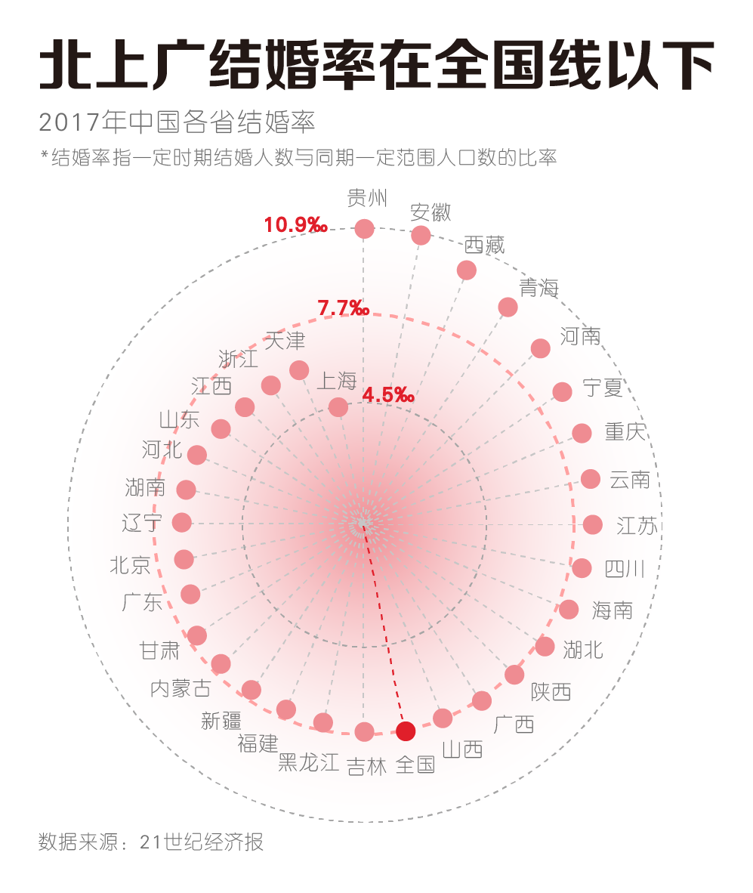
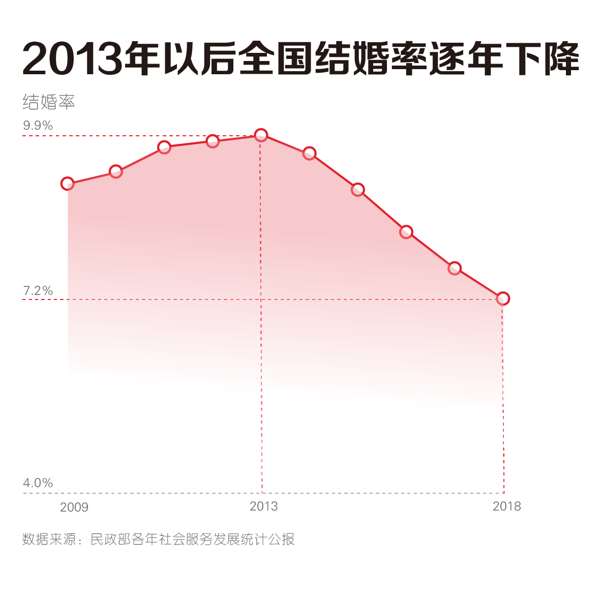
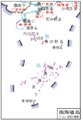
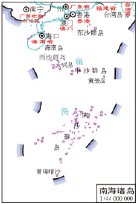
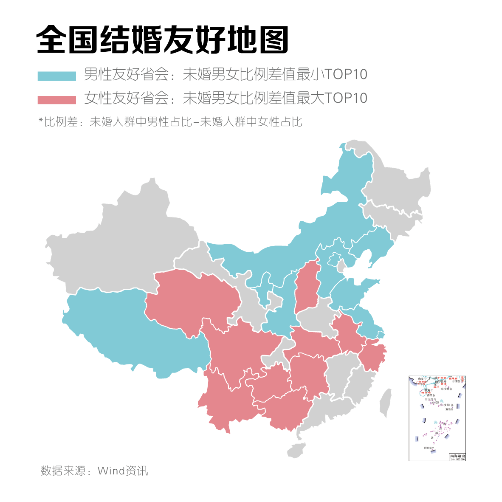
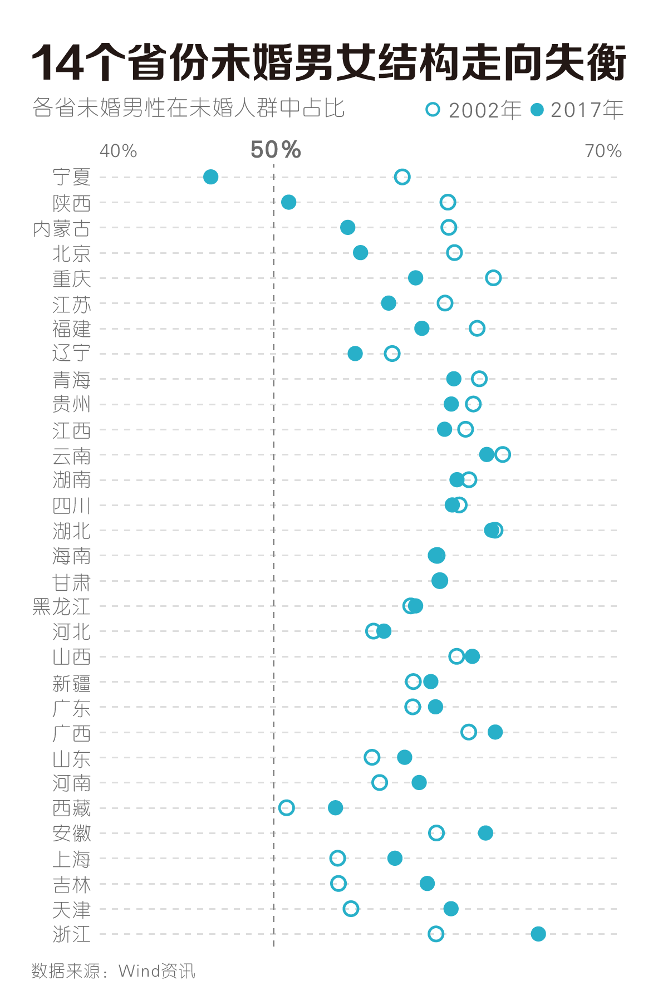
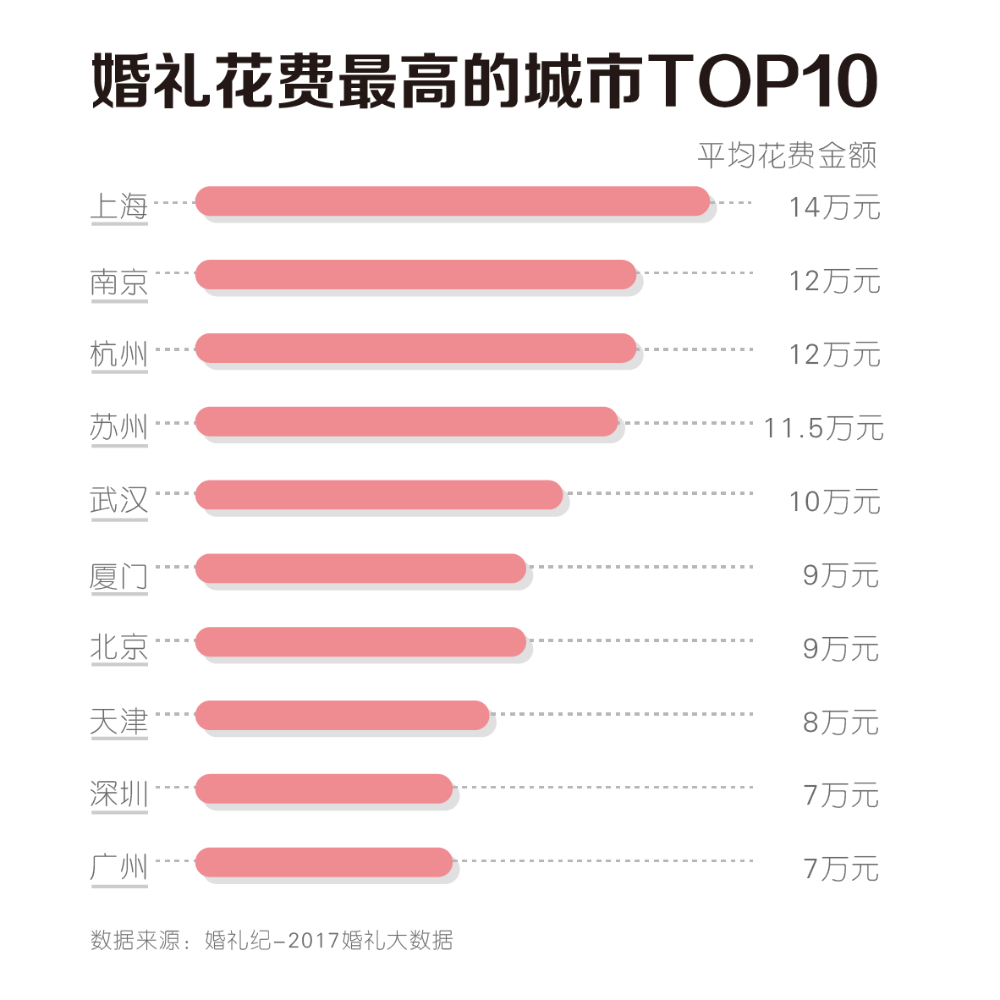

33岁的Leon，是北京一家互联网公司的市场部员工。30岁以后，比起工作中的挑战，应对父母的逼婚成了他更大的难题：
年纪不小了，北京不好待，赶紧回家娶媳妇吧。
但是，北上广真的那么“难结婚”吗？我们分析2002年-2017年全国31个省份（港澳台数据缺失）未婚男女抽样调查数据发现：和北上广相比，二三线省份老家也好不到哪里去，结婚的难度也不小，甚至可能找到合适对象的几率更低。
北上广结婚真的很难吗？2017年中国各省结婚率显示，北京、上海、广东的结婚率在全国结婚率以下，确实“结婚难”。但是，其他省份也并不容易，比如对Leon来说，老家甘肃的结婚率和北京也相差无几。
实际上，结婚率降低是目前全国的一个普遍问题，2013年以后，中国结婚率连续五年不断下降，总体降幅达到1.9‰。
结婚率一再下降，这与近年来适婚人口总量下降等因素有关。Leon这一代85后，出生于中国整体出生率下降的时代。根据国家统计局发布的《中国统计年鉴》中对于人口出生率的统计结果，在1989年-1993年间，我国的人口整体出生率呈现出逐年下降趋势，总体降幅为3.49‰。这对当今的结婚登记数和结婚率产生了影响。
所以结婚难，怨不得北上广，这是一个由多种复杂因素导致的现象。

除了适婚人口数量持续下降，各省未婚男女比例失衡，也加剧了结婚难度。
我们分析了2002年-2017年31个省份未婚男女抽样调查数据发现：不仅北京、上海未婚人群中男女比例失衡，其他省份也存在着类似的现象。
 

北京、上海未婚人群中男女比例差值在所有省份中并不算高，单从未婚人群男女比例来看，有二十多个省的差值高于北京、上海。所以单身人士回老家，在婚恋市场的竞争压力并不一定会更小。
比如，在浙江，每100个未婚人士中就有65个男性，未婚人士中的男女比例差高达30%。有12个省份的未婚人群男女比例差值超过20%，而北上广并不再其中。
不过不要担心，如果你所在的省份婚恋市场竞争很激烈，或许可以考虑去往周边省份寻找爱情。
比如，天津未婚人群中男性比例比女性比例高20.37% ，但是如果坐半小时高铁到旁边的北京，这个比例差值会降低到9.97%，也就是说天津未婚男性到北京找对象，反而竞争压力会小不少。
这里我们根据未婚男女比例差值制作了一份“全国结婚友好地图”，在这些省份或许你将更容易找到另一半。
在理想状态下，男女比例平衡是健康的社会结构，在这种情况下结婚率会比较高。但是，在过去的15年中，全国有14个省份的未婚男女结构失衡情况愈发严重。
浙江是目前全国比例最失衡的省份，未婚男性比例在15年间占比上升5.88%。陕西是全国最为平衡的省份，目前的男性在未婚人群中的占比是50.86%，其余所有省都与50%平衡线有3.5%以上的差距。有意思的是，宁夏在2002年未婚男性占比为57.39%，15年后，未婚女性占比已经超过男性，达到53.62%。
为什么近年来结婚率一路走低？除了上面的人口原因，还有一些因素在影响人们结婚的决定。在北上广和一些省会城市，仅仅是举办婚礼一项开销就可能会花掉一个适婚青年一年的收入。
举办婚礼的成本都如此高，就更不要提置办婚房的费用了。根据安居客官网2018年房价统计，北京、深圳、上海、厦门、广州、三亚的平均房价都超过30000/㎡。而经济欠发达省份，如广西、甘肃、江西、宁夏等地，对于彩礼要求也并不低，去年江西68.8万天价彩礼的事情仍然让许多人记忆犹新。
据Leon表述，在他的老家甘肃某三线城市，虽然房价远低于北京，但是如果决定回家结婚定居，工资相比于在北京将成倍减少，结婚压力也并不会小太多：房子首付+装修费用+购车至少40万，再另拿15万的彩礼。
这一代年轻人的婚姻观正在发生改变，结婚已经不再是必须要作出的选择。
综艺节目《我家那闺女》中，31岁的女演员焦俊艳对婚姻的态度是顺其自然，但她一句简单的困惑也问出了很多人的心声：人为什么要结婚？
根据团中央青年之声发布的《当代青年群体婚恋观调查报告》，有约40%的女性和20%的男性倾向于不结婚，认为“单身也很幸福”、“婚姻会让人失去自由”。还有约11%的人决定结婚的原因是外界因素：“不想被人觉得奇怪”。
网络市场调查机构onepoll调查了2000人不想结婚的具体原因，排在前几位的原因有：
不需要用“结婚”来证明双方的爱
结婚是陈旧的父权体制下的过时的传统
结婚的开销太大
想保持自身独立
见到太多人离婚
Leon的母亲一直认为，北京适婚男生中优秀的人太多，Leon的条件在北京最多只算普通，但是回到老家就可以“秒杀”大部分相亲市场上的竞争者，达到“降维打击”的效果。而对于Leon而言，不结婚可能更多是他自己的选择，结婚并不一定是爱情的最终归宿，也不是人生的必选题。